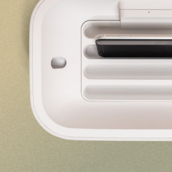
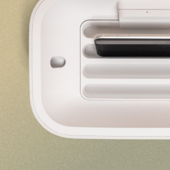

89% of interactions with our smartphones are self-initiated.
Source: Dr. Maxi Heitmayer
Aro is the first in-home digital wellbeing solution designed for families. The Aro platform ensures you don’t miss out on what’s most important by making it easy for everyone to put down their phones and be fully present
We only get so much time with our kids--18 years goes by quickly. Aro helps both parents and kids put down their phones when it’s family time so you don’t look back wishing you spent more time with your family and less time on your phone.
of the time we spend with our kids in our lifetime will be spent by age 12.

Giving your kids a smartphone is a stressful decision. Aro helps them develop healthy relationships with their phones, allows you to model good habits, and gives you peace of mind knowing they have the tools to be safe and successful.
of parents believe it's important to have time as a family without screens present.
We’ve all been there. It’s the end of the day, the kids are finally asleep, and what happens? We sit down on the couch and pick up our phones rather than connect with the person right next to us. Putting your phone in Aro shows your partner you are truly present with them.
of married couples admit technology distracts them from connecting with each other.

.png)
Sometimes we need to quiet the outside voices a little. Aro is your reminder that it’s OK to take some time for yourself. That could be reading a book, reflecting on the day, or even just getting a good night's sleep. You deserve it.
of adults keep their phones within an arm’s reach all day.
.svg)
.svg)
Aro is so much more than an app and box for you phone. It’s about what happens once you put down your phone. Aro lets parents and kids connect by creating an environment where phones aren't a distraction.
See How it WorksThe Aro app gamifies the experience of being off your phone. The app automatically connects to the Aro Home device, measures the time you spend away from your phone, reminds you to take breaks from your phone, shows you data to improve your phone habits, and even lets you connect and compete with others.
See How it WorksIt’s beautiful, designed to be seen, and packed full of technology. The Aro Home device automatically connects to your phone when it’s placed inside and starts measuring the time you spend away from your phone. Oh yeah. It charges five phones at once too.
See How it Works“I don’t want my kids constantly seeing me with my head down to be normal. Aro gives us an invitation to put our phones away and allows us to be more present with each other.”
“Aro holds us accountable for the time that we spend every day. Instead of looking down at our phones, we’re looking into our kids’ eyes, we’re playing with them, and we’re shaping our family in a more loving and powerful way.”
“We’ve always had our kids keep their devices outside in the living room before they go to bed, but now our daughter loves putting her phone in Aro at night so she gets credit for her time away.”
A positive and practical approach to putting down our phones to be more present in the moments that matter

Unlike other solutions designed to reduce screen time, the Aro platform combines an app and a physical device to create distance between you and your phone so you can have quality time without the distraction of your phone.
We live in a gamified world - badges, streaks, achievements, and filling in that daily ring. Aro gives you credit for the time you spend engaged in real life because the reward builds the habit of putting down your phone.
We’ve spent years researching, designing, and developing a solution to help both parents and kids. From a beautiful device Mom won’t hate on the kitchen counter to the celebratory GIFs in the app, Aro appeals to the whole family.

No heavy handed approaches here. Getting rid of your phone or completely locking it away are not practical solutions. We need our phones...but maybe not at the dinner table or during a conversation. We designed Aro to fit in your everyday rhythms.
Source: Dr. Maxi Heitmayer
 

Make phone-free time a part of your daily routine.